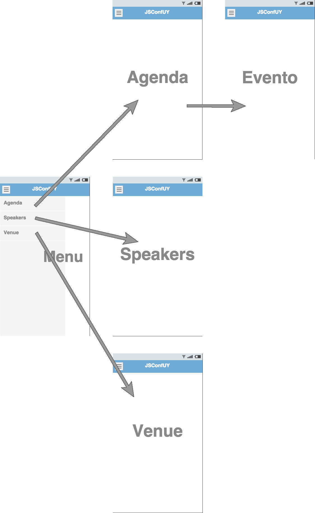

Apps híbridas con AngularJS & Ionic
Agenda
- Ionic Intro
- apps nativas vs. apps híbridas
- ¿qué es Ionic?
- Demo
- init
- build
- deploy
- showcase
- dev tips
Desventajas de las Apps Nativas
- Experiencia requerida para cada plataforma
- Code base totalmente distinto (Java, Objective C, Swift)
- Ciclos de desarrollo largos y costosos
Más plataformas, más problemas


Por qué aun seguimos programando para múltiples plataformas?
“Hay alguna alternativa?”

- Apps híbridas: HTML5 que actua como nativo
- Web stack encapsulado en una app nativa
- Acceso a las capacidades del dispositivo (acelerometro, camara, contactos, etc.)
- Entorno de desarrollo familiar (web stack)
- Desarrollo de un solo code base
“Hola”
Tecnologías web que ya usas y dominas


AngularJS FTW!
- Usado para desarrollo de webapps de gran escala
- Extiende el vocabulario de HTML
- Componentes UI son directivas y servicios de angular
Enfoque Nativo
- Basado en SDKs Nativos
- Construido para trabajar con Cordova
- Desarrollas una sola vez, compilas para varias plataformas
Alto rendimiento
- Animaciones aceleradas por Hardware
- Mínima manipulación del DOM
- No usa jquery
Diseño
- Limpio, sencillo y funcional
- Usa CSS y SASS
- Variables - fácil de customizar
- ionicframework.com/docs/components
Ionicons

Más de 700 íconos con licencia MIT
“Cómo se integra todo esto?”
Tu App
Ionic
AngularJS
WebView (Cordova)
Native SDK
Componentes de UI

Listas
Listas mas complejas
- Directiva en AngularJS
- Los botones tienen swipe
- Re ordenar
- Eliminar
List Item {{ item.id }}
Collection Repeat
- Similar a Angular
ng-repeat - Inspirado en UICollectionView de iOS
- Scroll con miles de items
- Solo renderea los items visibles
- Scrolling suave y perfecto
{{ c.name }}
{{ c.email }}
Navegación
- Usa AngularUI Router
- Pone el back button cuando es posible
- Las transiciones toman la direccion de la navegacion
- Compatible con el back button de Android
Back
Tabs
- Vistas anidadas
- Cada tab tiene su propio historial de navegación
- Estados abstractos en AngularUI Router
Menu lateral
Left Menu
...
Slide Box
Slide 1
Slide 2
Slide 3
Action Sheet
- Servicio de AngularJS
- Inject into controllers
$ionicActionSheet.show({
titleText: 'Action Sheet Example',
buttons: [
{ text: 'Share' },
{ text: 'Move' },
],
destructiveText: 'Delete',
cancelText: 'Cancel',
buttonClicked: function(index) {
console.log('BUTTON CLICKED', index);
return true;
}
});Popover
- AngularJS Service
- Inline or external template
$ionicPopover.fromTemplateUrl('popover.html',
function(popover) {
$scope.popover = popover;
}
);
My Popover Title
Hello!
Modal
- AngularJS Service
- Inline or external template
$ionicModal.fromTemplateUrl('modal.html', {
scope: $scope
}).then(function(modal) {
$scope.modal = modal;
});Pull to Refresh
$ npm install -g ionic
_ _
(_) (_)
_ ___ _ __ _ ___
| |/ _ \| '_ \| |/ __|
| | (_) | | | | | (__
|_|\___/|_| |_|_|\___| CLI
- Inicializa el proyecto usando templates basicos
- Crea estructura del proyecto
- Herramientas preconfiguradas: Gulp, Sass, Bower, etc.
- Servidor de desarrollo local con LiveReload
- Build & run apps
Demo Time!
App de JSConfUY
Inicializar el proyecto
$ ionic start myapp sidemenu
$ cd myapp
$ ionic serve
Estructura
├── bower.json // dependencias de bower
├── config.xml // configuraciones de cordova
├── gulpfile.js // tareas de gulp
├── hooks // hooks custom de cordova
├── ionic.project // configuracion de ionic
├── package.json // dependencias de node
├── platforms // donde van a estar los builds de iOS/Android respectivamente
├── plugins // donde se van a instalar los plugins de cordova/ionic
├── scss // código sass
└── www // aplicación - JS, libs, CSS, imágenes, etc.
Navegación
Layout Speakers
- Mostrar listado de speakers de la conf
- Skills de cada speaker
- Link a charlas del speaker
Using ionic cards
Layout Venue
- Donde es la conferencia?
- Como llego?
Using google maps
Layout Agenda
- Horarios y duracion de los eventos de ambos dias
- Info de los eventos
Using ionic tabs
Acceso a datos
- $resource, $http
- Backend API, local json, BaaS (parse, firebase), etc
Super poderes
- Get directions
- Social share
- Local notifications
Sass
- Mixins
- Variables
Dev tips!
- Chrome console
- Remote debugging
- Ionic live reload
- Ionic comparison view
Plataformas
- Android
- $ionic add platform android
- $ionic build android
- iOS
- $ionic add platform ios
- $ionic build ios
Qué más nos da Ionic?
- Ionic view
- Ionic push
- Ionic creator
- Ionic analytics
Mas recursos
Guía para comenzar
ionicframework.com/getting-started
Documentación
ionicframework.com/docs
Foro de la comunidad
forum.ionicframework.com
Contribuí en GitHub
github.com/driftyco/ionic